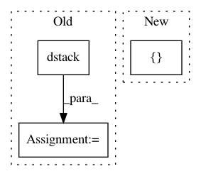

a249f8be333197908a1f79f7279c2feae2ab3e22,cellprofiler/modules/identifysecondaryobjects.py,IdentifySecondaryObjects,display,#IdentifySecondaryObjects#Any#Any#,735
Before Change
figure.subplot_imshow_labels(1, 0, segmented_out, "%s objects" % self.objects_name.value,
sharexy = figure.subplot(0, 0))
primary_img = np.dstack((img, img, img))
//
// Stretch the outline image to the full scale
//
primary_img = stretch(primary_img)
// Outline the primary objects
cpmi.draw_outline(primary_img, primary_outline > 0,
cpprefs.get_primary_outline_color())
After Change
figure.subplot_imshow_labels(1, 0, segmented_out, "%s objects" % self.objects_name.value,
sharexy = figure.subplot(0, 0))
cplabels = [
dict(name = self.primary_objects.value,
labels = [ primary_labels ]),
dict(name = self.objects_name.value,
labels = [ segmented_out ])]
title = "%s and %s outlines" %(
self.primary_objects.value, self.objects_name.value)
figure.subplot_imshow_grayscale(
0, 1, img, title = title, cplabels = cplabels,
In pattern: SUPERPATTERN
Frequency: 3
Non-data size: 3
Instances
Project Name: CellProfiler/CellProfiler
Commit Name: a249f8be333197908a1f79f7279c2feae2ab3e22
Time: 2014-03-04
Author: leek@broadinstitute.org
File Name: cellprofiler/modules/identifysecondaryobjects.py
Class Name: IdentifySecondaryObjects
Method Name: display
Project Name: GPflow/GPflow
Commit Name: 5809cb0b339612434f4f332a91a2cd3e4570c34d
Time: 2018-02-26
Author: james@prowler.io
File Name: gpflow/transforms.py
Class Name: LowerTriangular
Method Name: backward_tensor
Project Name: reinforceio/tensorforce
Commit Name: a1926719a8174e17f9b002c6369880f11b5dab88
Time: 2016-11-13
Author: mi.schaarschmidt@gmail.com
File Name: tensorforce/value_functions/deep_q_network.py
Class Name: DeepQNetwork
Method Name: create_training_operations